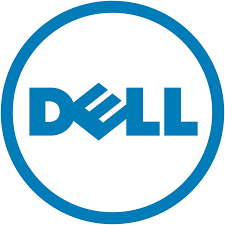

DELL

Dell es una compañía multinacional estadounidense establecida en Round Rock (Texas), la cual
desarrolla, fabrica, vende y da soporte a computadoras personales, servidores, switches de red,
programas informáticos, periféricos y otros productos relacionados con la tecnología.
El 7 de septiembre de 2016 Dell completa la adquisición de EMC para crear Dell Technologies,
la fusión entre Dell(fabrica y vende computadoras y servidores) y EMC (principalmente data center)
dio origen a la mayor compañía tecnológica del mundo de capital privado, con un negocio de US$
74.000 millones, unas 20 mil patentes a nivel global y US$ 80.000 millones en ingresos. En todo
el mundo tiene 140 mil empleados.
La corporación creció durante los 80 y los 90 para convertirse durante varios años en el vendedor
de PC y servidores más grande del mundo. En 2008 ocupó el segundo lugar.En 2008 tenía 95.000 empleados
en todo el mundo.
En 2005, la revista Fortune consideró a Dell como la primera empresa más grande del mundo en la
lista Fortune 500 y octava en su lista "Top 25" de las compañías más admiradas en Estados Unidos.
En 2007 Dell se ubicó en las posiciones 34 y 8 respectivamente en las listas equivalentes para
ese año. Una publicación de 2006 identificó a Dell como una de las 38 compañías de alto rendimiento
en el S&P 500 que ha tenido éxito sobre el mercado en los últimos 15 años.
Historia
Michael Dell comenzó el negocio con la convicción de que mediante la venta de ordenadores personales directamente
a los clientes, PC Limited podría entender mejor las necesidades de los clientes. Dell abandonó la universidad
para dedicarse a tiempo completo a su incipiente negocio, tras obtener una ampliación de capital de 300.000
dólares de su familia.
En 1985, la compañía produjo la primera computadora con su propio diseño —el "Turbo PC"— que contenía un procesador
Intel 8098 con una velocidad de 8 MHz. PC Limited publicitó los equipos en revistas de informática de circulación
nacional para venta directa a los clientes y ensamblaje personalizado en cada unidad ordenada, de acuerdo con
una primera en lograr el éxito. La compañía obtuvo 73 millones de dólares en su primer año.
La empresa cambió su nombre a "Dell Computer Corporation" en 1988. En 1989, Dell Computer diseñó su primer programa
de servicios in-situ para compensar la falta de minoristas locales preparados para actuar como centros de
servicios. También en 1987, la compañía estableció sus primeras operaciones en el Reino Unido; otras 11
operaciones internacionales siguieron cuatro años más tarde. En junio de 1988, la capitalización del mercado de
Dell creció entre 30 y 80 millones de dólares desde su oferta pública inicial de 3,5 millones de acciones a 8,5.
En 1991, Dell trató de vender sus productos a través de almacenes y tiendas de computadoras, pero tuvo poco éxito
y volvió a su más exitoso modelo de venta directa. En 1992, la revista Fortune incluía Dell Computer Corporation
en una lista de las 500 compañías más grandes del mundo. En 1996, Dell comenzó a vender computadoras a través
de su sitio web.
El 1 de marzo de 2007, la empresa publicó un anteproyecto de informe de ganancias trimestrales que mostraron ventas
brutas de 14,4 millones de dólares, por debajo del 5% año tras año, y un ingreso neto de 687 millones de dólares
(30 centavos por acción), es decir un bajón del 33%. Los ingresos netos se hubieran reducido aún más si no fuera
por la eliminación de las primas de los empleados, que representaron seis centavos por acción. NASDAQ prorrogó
el plazo para la presentación de estados financieros a 4 de mayo.